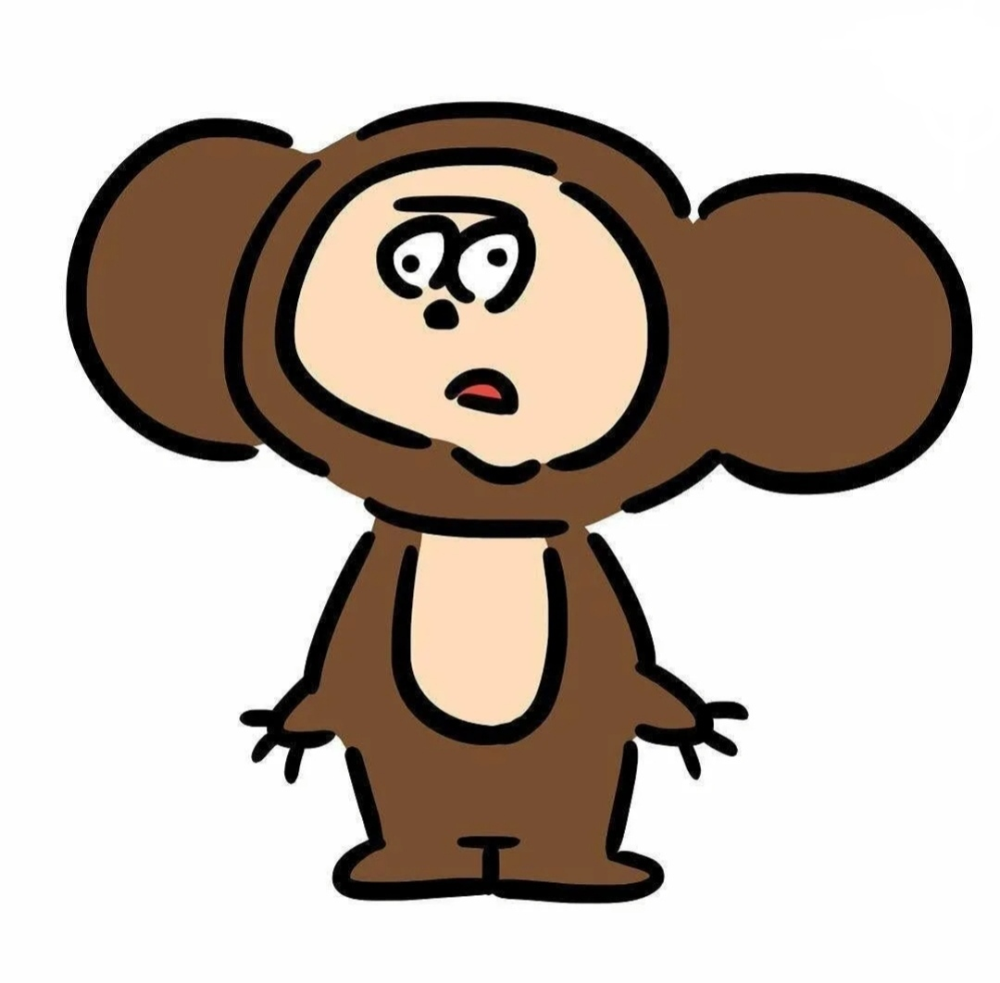

подписчики:0
Сегодня, я родился в кусте. Сначала я не понимал ничего и просто лежал и орал. Но потом меня нашел какой-то чепух. И унес меня домой.
Там он меня наел едой, отогрел от жары и напоил. Я перестал орать. Мне было все равно и я просто лежал.
Однажды Чепух варил пелемени и 2 пелеменя сбежало! Но я не растерялся, и сбежал с ними.
Бегу, бегу и вижу: в магазине кроме пелеменей стоят еще и макароны. Я подошел к ним и они сказали: "выпустите позязя, нам надоело сидеть в пачках", я их выпустил и они разбежались по всему магазину.
Я уже захотел было уйти, как понял, что я забыл где находится выход.